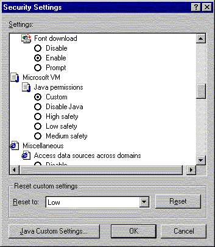
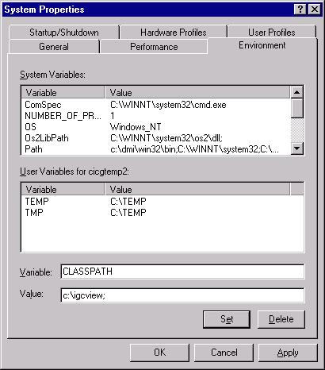

IGCview has been written entirely in the internet programming languages Java and HTML, which means it can be run from a web server or locally on your home PC simply by accessing the igcview.html file with your browser. In either circumstance, you have to configure your PC to allow IGCview access to your local log files, as the default for Java is no access to any local files.
This configuration is simple, and is explained below.
| Usage | Pros/cons |
|---|---|
| Launching IGCview from a web site | IGCview can be bundled with some competition logs on a web site, and I intend to make it simple for a competition to preload some logs for display. Also accessing a website of IGCview is more convenient if your only means of access to the internet is via a web cafe or your employer, where local install of software may be difficult. IGCview was originally written to be run locally on your PC, but since placing the program on my homepage (http://www.forsterlewis.com) I have found that means of access very convenient. |
| Running IGCview locally on your home computer | Downloading IGCview to your 'c:' drive improves performance (slightly) depending on the speed of your internet connection, and more importantly removes the requirement for an dial-up connection each time you run the program - important if you're paying per-call charges, or sitting in the middle of an airfield with a laptop. |
Essentially, all you have to do is go to the web page and IGCview is up and running right there. However, permissions must be set in your browser to allow IGCview to load your local IGC files. The default setting for your browser prevents web (java) application to local files. This is a standard function of the browser, designed to protect your machine from malicious code embedded in any web page. We can allow IGCview to run properly by defining my website as a 'Trusted site'. The alternative is to download IGCview from my site and run it entirely locally, like any other local application.
Here is a set of instructions suitable for Microsoft Internet Explorer - I haven't got around to creating similar instructions for Netscape or other browsers, but it should be possible to do something similar.
| Step 1. From the IE menu, access Tools... Internet Options, and click the Security tab. Then on the Security page click on the 'Trusted sites' zone icon, and then click the 'Sites...' button. |
|
| Step 2. Uncheck the checkbox labelled 'Require server verification (https:) etc.', and in the 'Add this Web site to the zone' box type http://www.forsterlewis.com. Then click the 'Add...' button and then 'OK'. Back on the 'Internet Options' panel (shown above), click on the 'Custom Level...' button. |
|
| Step 3. In the 'Security Settings' panel, scroll down to the Microsoft VM..Java Permissions and select 'Custom', which will cause a 'Java Custom Settings' button to appear at the bottom of the panel. Click this 'Java Custom Settings' button. |
 |
| Step 4. On the 'Trusted sites' panel select the 'Edit Permissions' tab and ensure you select the following under 'Unsigned Content..Run Unsigned Content':
|
IGCview html and java class files are delivered zipped.
Download and unzip igcview.zip into a suitable directory from which to run the program, e.g. "C:\igcview".
You have to store your flights somewhere
Create a directory to hold your IGC log files, e.g. "C:\igcfiles". If you already have your log files somewhere then fine, just leave them there.
You (may) need to tell your browser where the program files are.
Windows NT and Windows XP From the desktop 'Start' menu, go 'Settings' 'Control Panel' 'System' 'Environment' and create a new variable 'CLASSPATH' with the value ".;[the directory IGCview is installed in]" for example ".;c:\igcview". For Windows XP, the process is pretty much the same with superficial changes to the settings windows. See here for the system properties window, then the environment variables window, and the new variable window, where you create or edit the CLASSPATH variable. |
 |
Windows ME & earlier
|
To run the program:
To run IGCview just enter "c:\igcview\igcview.html" in the browser address box or click on that file in Windows Explorer.
Alternatively, follow the link in 'igcview_home.html'
{kind=link}
{kind=link}
{kind=link}